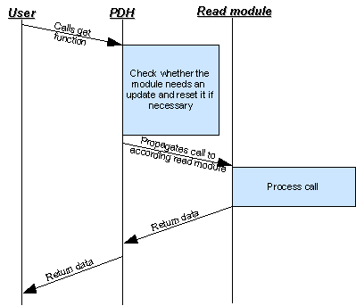
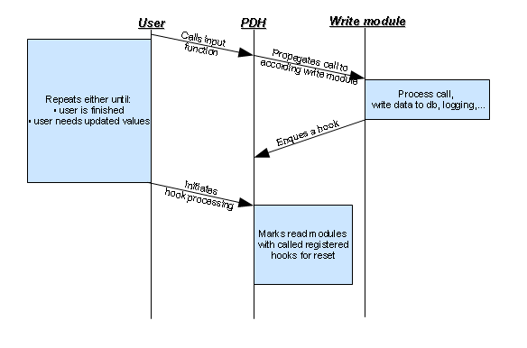

Plus Data Handler
Contents
Abstract
The Plus Data Handler (PDH) is one of the main new features introduced with eqDKP Plus 0.7. It is an abstraction layer between the database (db) and the developer which is supposed to be easy to use, modular and also should allow the users/developers to create more customized eqDKP plus systems.
Motivation
In non-multi-DKP environments rudimental caching for points and dates was used to speedup the system loading times, unfortunately the main issue with this concept was that many developers and modders used direct db calls in their mods/plugins and wouldn't call the respective cache hooks resulting in a tainted cache and the need for fixes like the fix_negative.php. Also the user was allowed to directly alter the cached values, resulting in non comprehensible values.
By removing those methods from the admin menu and giving easy global access to the data and cache hook system, those errors should be minimized.
PDH Design
The PDH is based on two kinds of modules which are glued together by a hook system. There are write modules to write data to the database and read modules to get data from the db. Write modules can enqueue hooks within the PDH and read modules can register hooks they want to listen to for update requests. In general you will always have to specify the module name and the tag (more or less the method name) if you want to get any data from the PDH. Lets take a look at the general workflow diagrams.
General work flow
| Read | Write |
|---|---|
|  |  |
{kind=link}
{kind=link}
API and examples
Writing
API: put
function put($module, $function, $params=array())This function is used to write something in the database and it takes three parameters. First the module name, second the function name you want to call and at last an optional array with parameters to pass to the function.
Examples
- Delete adjustment with id $id:
$pdh->put('adjustment', 'delete_adjustment', array($id));- Add a raid with values stored in a $data['raid'] array:
$pdh->put('raid', 'add_raid', array($data['raid']['date'], $data['raid']['attendees'], $data['raid']['event'], $data['raid']['note'], $data['raid']['value']));Reading
API: *get*
function get($module, $tag, $params=array(), $sub_arr = null)
function aget($module, $tag, $expand_key, $params=array(), $assoc=false, $sub_arr=null)
function geth($module, $tag, $params, $sub_arr = null)
function ageth($module, $tag, $expand_key, $params=array(), $assoc=false, $sub_arr=null)At first let me explain the difference between the get and the geth methods. The methods ending on a "h" will return html formatted results, if specified in the read modules and will fallback on the normal get functions. So I'll only explain the two get versions without an h suffix.
The get function is the default way to get data from the database with the PDH. The parameters are:
- $module : module name
- $tag : tag name
- $params : parameter array
- $sub_arr : will be discussed elsewhere
Examples: get*
- Get a event name:
$pdh->get('event', 'name', array($event_id));The aget function is short for array get and will return an array with get values. The parameters are:
- $module : module name
- $tag : tag name
- $expand_key : numerical index which parameter contains the array to expand
- $params : parameter array
- $assoc : return associative array
- $sub_arr : will be discussed elsewhere
Examples: aget*
- Get an member id => name array, assoc equals false:
$members = $pdh->aget('member', 'name', 0, array($pdh->get('member', 'id_list')));Returned array will look like: $members[0] = 'sz3'
- Get an member id => name array, assoc equals true:
$members = $pdh->aget('member', 'name', 0, array($pdh->get('member', 'id_list')), true);Returned array will look like: $members[0]['name'] = 'sz3'
Hooks
function process_hook_queue()This function is used to initiate the update process. You should call it to finish your insertions or if you need current data from the PDH.
'''Start of work in progress part'''
Extensions: Presets and Aliases
As mentioned the PDH is designed so eqDKP plus systems can get more versatile. One of the main aspects of any eqDKP system are various data tables like the member/raid/item/... lists which will get their data via the PDH, too. For this purpose there a some more things beside the already mentioned which you won't need for every basic PDH module.
Captions
If you want to use a tag as a table column, this column will need a caption in the table header. For this pupose you can use the following functions:
function get_caption($module, $tag, $params)
function get_html_caption($module, $tag, $params)As always the html method will fallback to the non html method and in this case the non html method will fallback to return the tag. More will be explained later on, when I'll describe how to write your own modules.
Comparison
People like to sort table columns, so of course we need to be able to sort by tags:
function comp($module, $tag, $direction, $params1, $params2){If there is no special compare function designed in the read module, this will fallback to default php comparisons. It will return:
- <0 <=> value1 < value2
- 0 <=> value1 = value2
- >0 <=> value1 > value2
These values are modified by the $direction parameter (1/-1), which can reverse the return values depending on your sort direction.
Language
Presets
Presets are defined in the read modules and narrow down user choices. They are predefined sets of module, tag and parameter choices.
'mname' => array('name', array('%member_id%'), array())
'mlink' => array('memberlink', array('%member_id%', '%link_url%', '%link_url_suffix%', true, true), array())Substitutions
As seen in the presets section, there sometimes you need dynamic input on presets, like the current member id or a link to a admin or normal user page, these are purpose of substitutions.
Aliases
'''End of work in progress part'''
Writing your own modules
Writing your own modules is a nice feature to customize and extend the eqDKP Plus system.
Module, file names and folders
You should always make sure that you won't reuse already used module names. If you want to add an module to a plugin you should prefix the name (e.g. bs_ for BossSuite modules). There a two different general locations for PDH moduels:
- In the pluskernel/data_handler/includes/modules/{read|write}
- plugins/YOURPLUGIN/pdh/{read|write}
Each module needs to be in its according folder and has to be prefixed by either pdh_r_ (read module) or pdh_w_ (write module). The Folder and file structure will look like this:
read/MODULENAME/pdh_r_MODULENAME.class.php write/MODULENAME/pdh_w_MODULENAME.class.php
Registering modules
Modules in the pluskernel/data_handler/includes/modules/{read|write} will be scanned by default and don't need to be registered manually. If you want to register modules in plugins you have to call the following methods within your plugin object constructors:
$this->add_pdh_read_module('module_name');or
$this->add_pdh_write_module('module_name');Create a new write module
Creating a write module is actually quite easy, lets create a helloworld write module.
- First create your folders and files:
/write/helloworld/pdh_w_helloworld.class.php
- Then you'll have to do the php coding:
<?php
if(!defined('EQDKP_INC')){
die('Do not access this file directly.');
}
if(!class_exists('pdh_w_helloworld')){
class pdh_w_helloworld extends pdh_w_generic{
public function __construct(){
//we extend pdh_w_generic to get logging and gen_group_key functionality
parent::pdh_w_generic();
}
public function hello($name){
global $pdh; //don't forget
//write stuff to db
...
//maybe log it
...
//now we enqueue our hooks so read modules will know something changed
$pdh->enqueue_hook('rank_update');
...
}
}//end class
}//end if
?>- If it's in a module contained in a plugin, remember to register it.
Thats it. You now can call your module by:
$pdh->put('helloworld', 'hello', array('myname'));Create a new read module
Creating read modules is a tad more complicated. Lets create a basic helloworld example read module this time.
- First create your folders and files:
/read/helloworld/pdh_r_helloworld.class.php
- Then you'll have to do the php coding:
<?php
if ( !defined('EQDKP_INC') )
{
die('Do not access this file directly.');
}
if ( !class_exists( "pdh_r_helloworld" ) ) {
class pdh_r_helloworld extends pdh_r_generic {
//hooks we are listening to
public $hooks = array(
'member_update',
);
public function reset(){
//cleanup your local data arrays and the cache
//after calling this method this modul must have to
//recalculate dynamic values
}
public function init(){
//here you might fill internal data arrays by
//reading your module data from cache or recalculating
}
//functions with the 'get_' prefix will be available via $pdh->get
public function get_hello($member_id){
global $pdh;
return "Hello ".$pdh->get('member', 'name', array($member_id));
}
//functions with the 'get_html_' prefix will be available via $pdh->geth
//if this function wouldn't exists, the call would fallback to the
//get_hello($member_id) method
public function get_html_hello($member_id){
return '<b>'.$this->get_hello($member_id).'</b>';
}
}//end class
}//end if
?>- If it's in a module contained in a plugin, remember to register it.
Thats it. You now can call your module by:
$pdh->get('helloworld', 'hello', array($member_id));
$pdh->geth('helloworld', 'hello', array($member_id));